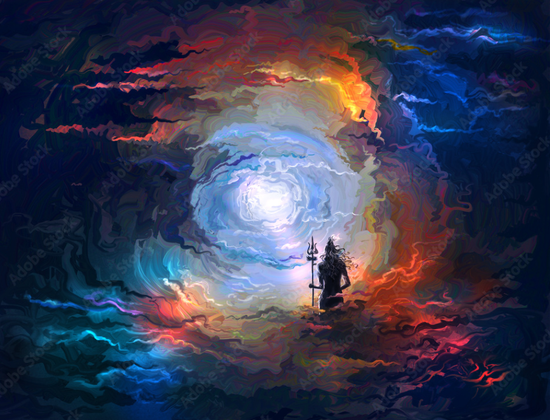

Lord Shiva, a paramount figure in Hinduism, occupies a central role in the intricate tapestry of the religion's mythology and cosmology. Revered as the "Destroyer" in the Holy Trinity, which also includes Brahma, the Creator, and Vishnu, the Preserver, Shiva embodies diverse aspects that resonate with the complex nature of existence.
Iconographically, Lord Shiva is often depicted with distinctive symbols that carry profound meanings. His third eye signifies inner perception and wisdom, capable of seeing beyond the apparent. The crescent moon adorning his matted locks symbolizes the passage of time and the cyclical nature of life. The snake coiled around his neck represents both the endless cycle of creation and destruction and his mastery over the primal forces. Nandi, the sacred bull, is Shiva's loyal companion, symbolizing strength, purity, and virtue.
Mount Kailash, believed to be Shiva's abode, is considered the holiest of mountains in Hinduism. It is the focal point of pilgrimage and a place associated with profound spiritual significance. The Ganges River, which flows through Shiva's locks, is another vital element in his iconography, symbolizing the purifying and life-giving force of nature.
Shiva's role as the "Destroyer" is not a mere act of annihilation but an essential aspect of the cosmic order. It signifies the necessary destruction of old forms to pave the way for new creation. In this cyclical process, Shiva's dance, known as the "Tandava," becomes emblematic. The Tandava represents the cosmic dance of rhythm and movement, portraying the dynamic interplay of creation, preservation, and dissolution.
Beyond the cosmic symbolism, Shiva is also revered as the ultimate ascetic. His meditative state on Mount Kailash symbolizes detachment from worldly desires and an unwavering focus on spiritual realization. Devotees look up to Shiva as a source of inspiration for achieving inner balance and transcendence.
One of the most intriguing aspects of Shiva's mythology is his dual nature. On one hand, he is the ascetic, immersed in deep meditation, and on the other, he is the lord of divine wrath, capable of unleashing destructive forces when needed. This duality reflects the multifaceted nature of the divine, encompassing both serene contemplation and fierce action.
Devotees express their reverence for Lord Shiva through various rituals and festivals, with Maha Shivaratri being one of the most significant. On this auspicious day, devotees observe fasting, perform night-long vigils, and participate in prayer and meditation to seek Shiva's blessings.
In popular culture, Shiva's influence extends beyond religious boundaries. His image and symbolism have inspired art, literature, and philosophy. The philosophy of Shaivism, dedicated to Lord Shiva, delves into the profound understanding of existence, consciousness, and the ultimate reality.
In conclusion, Lord Shiva stands as a captivating and multifaceted deity within Hinduism. His symbolism, mythology, and teachings encapsulate the intricate dynamics of the cosmos, emphasizing the cyclical nature of creation and destruction. Whether as the ascetic in deep meditation or the cosmic dancer in the Tandava, Shiva remains an eternal source of inspiration for seekers of spiritual wisdom and inner transformation.